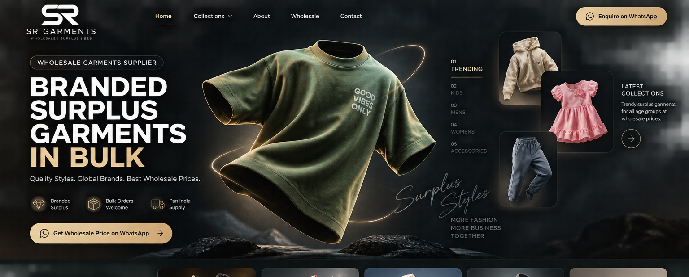

SR Garments is positioned as a wholesale destination for surplus and branded garment stock across categories, serving retailers, resellers and B2B buyers.
Our focus is simple: make it easier for buyers to discover quality garment stock, understand the category, and start a direct wholesale conversation without unnecessary online checkout steps.

Categories can change with available stock. The website is designed to keep discovery broad while making enquiry simple.